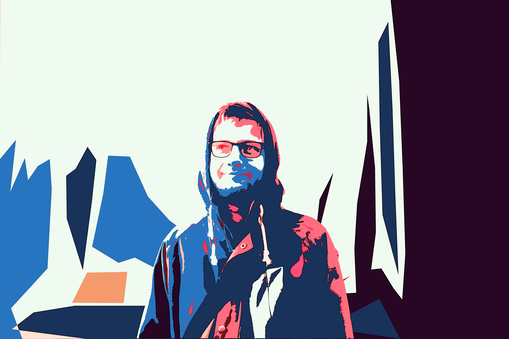

//about

Hello there. I am Luke. I'm an audio and music creator with a love for creativity and technology. The works I produce are born from a love for the weird, the complex and the beautiful. I started out in music, and still compose it. I release music in the general areas of trip hop, lo-fi, math and hard rock. Through university, I traversed into audio technology and game sound. I particularly love reverberation and the way it embodies and gives personality to sound. I'm currently getting knee deep in games programming and design. Head over to my projects section if you would like to take a look.